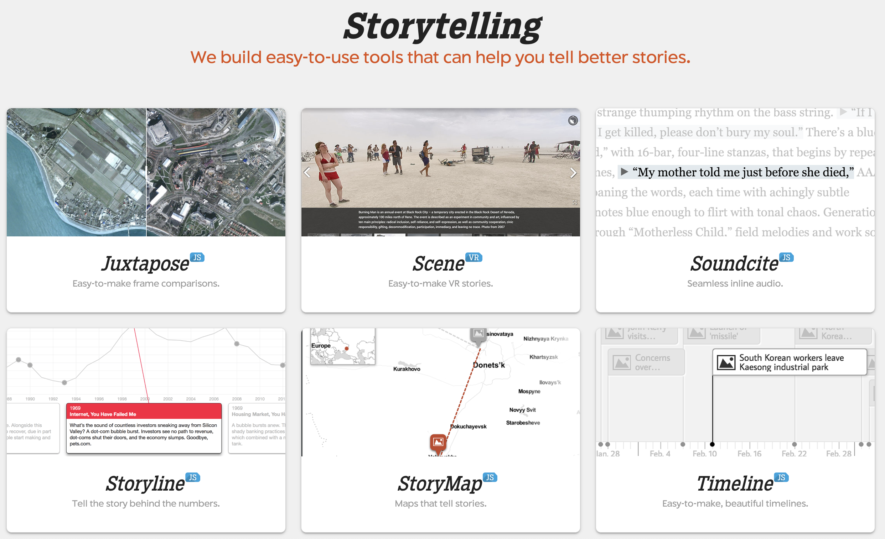
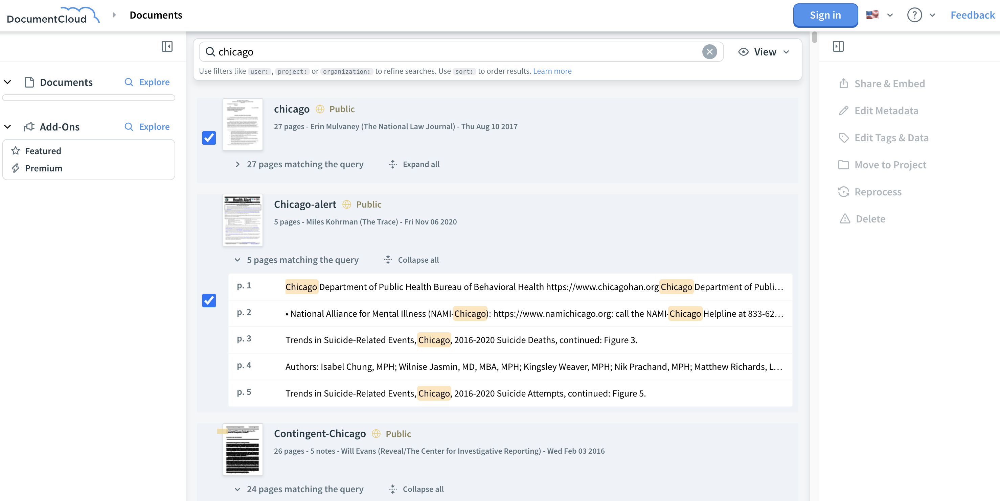
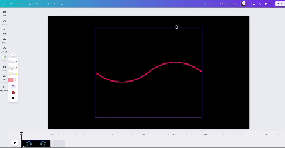

Embed interactives to enhance your storytelling
Knight Lab tools
The Northwestern University Knight Lab has developed a variety of interactive storytelling tools, including:
- Juxtapose.js is an image-comparison tool.
- SceneVR is tool for producing 360° visual narratives.
- SoundCite allows you to embed mini audio players within text.
- Storyline produces animated line charts.
- StoryMap allows you to build multimedia maps that pan across locations over time.
- TimelineJS helps you make interactive timelines to varying degrees of customization.
Read more about Knight Lab tools.
Google Journalists Studio
Google offers an uncomplicated tool for making simple categorical comparisons called Data Gif Maker.
Google News Initiative also offers Tilegrams, which allow you to make projection maps that are grouped into color-coded hex bins.
Data Studio offers another low-code solution for producing data visualizations.
Google News Initiative offers a training, Storytelling with Google Earth, that allows you to build interactive map-driven stories on Google platforms.
DocumentCloud
DocumentCloud makes it easy to embed PDFs on your site in a way that makes it easy for users to search and browse. This can be helpful for posting primary-source documents, which can enhance credibility and allow users to engage with source materials for themselves.
Canva
Develop simple animations using a slideshow-like interface usingCanva's free video editor. 
YouTube, Spotify, Soundcloud, etc.
Look up tutorials on how to embed video and audio players using simple share tools with embed codes.